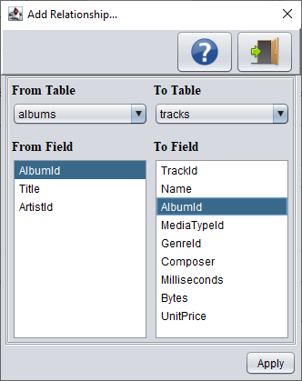

In this screen you can create a relationship between two tables. You can link data in one table to the
data in another table by selecting a field (= column) in a table that points to a column with unique values
in another table (often the primary key column) to create a way of cross-referencing the two tables.

Buttons
Button
Description
Shows information about this screen
Exits the screen
Apply
Apply the changes made on this screen
Notes
It is up to you to select to correct fields. Many databases allows you to define completely unrelated fields without
issuing an error.
Field Definition
From Table
Allows you to select the table you are linking from (the "left" table). By default the first entry would be the
current selected table. Other entries are the tables that you have previously linked to before.
To Table
Allows you to select the table you are linking to (the "right" table). These are all the tables in the database which
haven't been linked before.
From Field
Here you can select the "From Table" field(s) used for linking with the "To Table".
To Field
The "To Table" field(s) used for the link with the "From Table" can be selected here.